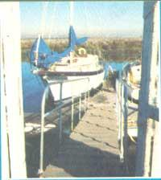
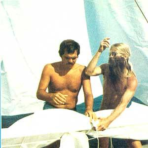
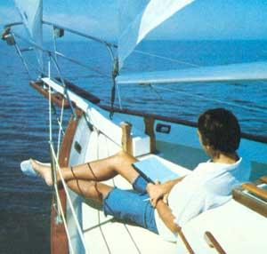
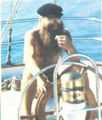
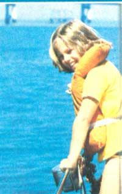

I've just returned from a seven-month voyage ... a journey that touched down on four major continents and covered more than 8,000 miles. How did I finance that "trip of a lifetime"? Well,paid my own daily expenses, but worked for my "fare" ... as a crew member aboard oceangoing yachts!
You'll probably be surprised to know that crew positions are readily available to lone men and women, or even to couples. In fact, these dream jobs are so easy to find that-although l did have a week's layover in the Canary islands-l was aboard three of the four vessels that l crewed on within a few hours of the time that l arrived at the docks to look for a position!
So, if wanderlust makes your bones ache for faraway lands, give this adventure-filled lifestyle a try. Of course, you'll need time (say, two to nine months) to make your trip-and to prepare yourself for it-but there are yachts just waiting for qualified crewmen or -women, and (if you care enough to make it happen) those boats could be waiting for you!
FIRST, A WORD OF WARNING
Not everyone is "cut out" for a long cruise on a small vessel. Just the thought of living for weeks at a time-with, say, four other people-in a constantly rocking 40- by 13-foot "room" is enough to discourage most folks. Keep in mind, too, that water will be strictly rationed (no fresh-water showers while underway), that you'll be expected to stand round-the-clock steering watches and be able to put up with a minimum of privacy ... and that the sea can be a dangerous environment.
Some people, however, find blue-water cruising their element. From my observations, these "types" are usually folks who like working with a team, who adjust to new situations quickly, and who love adventure enough to put up with the seagoing hazards and inconveniences.
ARE YOU EXPERIENCED?
You won't need extensive experience to get your first position, since most of your duties will consist of routine watches and sail handling. But-unless you're able to assume your share of the responsibilities right away- your other qualifications might not even be considered.
So, as a first step, go out and get enough experience to feel competent at the helm, to know a sailing vessel's nomenclature, to tie knots quickly and perfectly, and to be aware of the rules of safety afloat. This "break-in period" will also let you know whether you like sailing enough to do it for months on end ... and if you have a chronic seasickness problem!
And there're lots of ways to gain this necessary experience ... If you're willing to look for them! For example, perhaps you know (or could get to know) a sailboat owner, if so, a little enthusiasm and willingness to work should secure you some weekend cruise invitations.
Or, if you go to college near a navigable body of water, look for an on-cam-pus sailing club. (Such groups can provide good training grounds and are often recruitment pools for racing skippers!)
AS another option, you can hire sailing instructions from a private boat-owner. Most any marina bulletin board (or local boating publication) carries advertisements for these lessons (and -if you ever buy your own boat-offering this kind of instruction would be a good "home business" to keep in mind).
Of course, you'll also want to be well-read on seafaring matters. Your local library should have enough material (including back issues of yachting magazines) to get you started. Make a point to read voyaging under sail by Eric C. Hiscock (Oxford University Press, 1970) and Sailing Alone Around the world by Joshua Slocum (Dover Press, 1956), as well as the classic Reed's Nautical Almanac ... which includes yearly navigational and astronomical tables and a good sampling of the seafaring wisdom of the ages. The Almanac is a British publication and might have to be ordered at a nautical bookstore, but it's well worth the trouble.
GEARIN'UP
Storage space is extremely limited aboard a small vessel... so you should plan to take exactly what you need and nothing more.
Clothing will make up the bulk of your gear and should be chosen carefully. You'll need a swimsuit, cutoffs, and a few pullovers for those warm, sunny days... but-when the weather changes (sometimes in a matter of minutes!) or when you draw a night watch-two pairs of warm pants, several heavy shirts, a pulldown cap, and a warm coat can be worth their weight in gold. Remember that wool is the best material for cold weather... because it continues to insulate well even when it becomes damp. Also, pick layers of clothing rather than one or two heavy items, so you can strip off-or add-insulation as it becomes necessary. (it's also a good idea to carry one set of "dressy" clothes... to ease you through difficult border crossings and the like.)
Many vessels have spare foul-weather gear aboard, but it's best to have your own on hand to insure availability and proper fit. This clothing consists of a hooded jacket and pants-both waterproof-that fit loosely in the shoulders and legs (for ease of movement) and tightly in the waist and cuffs (to keep water out). One of these outfits will run you S50 or more, but it'll last for years and keep you dry ... at sea or on land!
Your "safety" gear can be limited to a pair of sea boots (which keep your feet warm and dry and prevent slips on deck) and a safety harness with a six-foot leash (overboard falls are never fun, and-at night or in stormy weather-they have a depressingly high fatality rate).
To round things out, you'll need some deck shoes (it's polite to wear soft-soled shoes or go barefoot to minimize deck wear), sun-screening lotion, polarized glasses, a sleeping bag, a boatswain's knife (for rope work), a toothbrush (etc.), and a few books that you've "always wanted to read but never had the time to".
Of course, a passport and (depending on where you're going) visas will be necessary. YOU should also carry enough traveler's checks in your money belt to cover your share of the ship's expenses and-just in case things don't work out-air fare home from any place you might end up.
Finally-to pack all of your gear-get a sea bag that folds up to a small size when it's empty ... so this "luggage" won't take up too much of your limited storage space aboard.
HOW TO MAKE CONTACTS
I'm always amazed at the crewing positions that go begging because of the lack of responsible "seamen" who have time to travel. You'll find ads for crew-people in local yachting publications and on marina bulletin boards. These are good spots, too, to place notices of your own availability. One couple that I met during my travels (in Greece ) had begun their voyage 10 months previously with a single ad posted in a LOS Angeles marina.
And don't overlook the direct approach! Let boatowners know you want a position, because most yachters are a gregarious lot, and if there's an opening-even in the next state-the person that you talk to is more than likely to know about it.
Or, yet again, you might visit boatyards and get to know people who "build their own". Help with construction can often be exchanged for a cruising berth aboard.
Most people, however, find that the quickest and most reliable method of gettin' afloat is to go directly to an international yacht harbor and canvass for crew openings. Because there is-for one reason or another-a regular "turnover" among crew members, new positions are always opening up.
"But which harbors? When?" you ask. well, just keep in mind that present-day sailing craft ply the same seasonal ocean routes that were followed by the windjammers of old. (The text to consult in locating these routes is Ocean Passages of the World, available at nautical bookstores.)
For example, yachts bound for the Mediterranean usually leave from eastern United States ports in late May or early June. Then, after a summer in such yachting centers as the Italian Islands , the Spanish coast, and the Aegean sea, these vessels will follow the warm air down to the Caribbean. On the way, the "little flotilla" of oceangoing yachts will stop to load duty-free supplies in Gibralter, then pause in the Canary Islands for the Caribbean hurricanes to end and the Portuguese trade winds to steady ... before attempting the transatlantic passage.
MAKE CONTACTS, PART TWO
Keep in mind that-though a few boatowners are quite wealthy-most captains have invested their life savings in their yachts (as you may, too, sometime in the future), sailing is a life-style to these folks, rather than just a hobby. Also, since most oceangoing boatowners started out as crewmen themselves, they expect friendly inquiries about crewing positions ... so there's no reason to be shy (but no fair trying to sell them!). Both you and the "skipper" want a beneficial relationship, an arrangement where everybody gains and nobody loses.
I've found, during my travels, that the easiest places to get "berths" are foreign yacht harbors. I simply scout around these ports for vessels that fly the flags of English-speaking lands. (Fluency in French or German would really be a bonus in this situation.) Then, in a straightforward manner, l ask the folks at each boat if they know of any vessel that wants an experienced crewman.
Now, if the people l talk to need crew, they'll tell me. if not, my approach saves them the trouble of turning me down ... and maybe they'll know of someone else with an opening. As a matter of fact, yacht people have contacted me days later about a job that just came up. Someone once said that looking for a crewing job is like throwing mud at the side of a barn ... you just keep slinging, and sooner or later some of it's bound to stick.
Of course, just getting to those foreign ports can-unless you "crew" your way over-be quite an investment. I wouldn't advise you to fly overseas ... unless you have plans that'll cover the possibility of not being able to get a sailing position once you arrive there.
THE AGREEMENT TO SAIL
After you've located that outward-bound vessel which "may need an extra hand", the scenario usually goes something like this:
The skipper invites you to "come aboard and talk". You're given a tour of the vessel, offered a cup of coffee, and asked a profusion of questions. This "interview", of course, helps the captain evaluate your abilities and attitudes ... in order to determine whether you'll fit into the boat's "seagoing community". And-at the same time-you'll be "sizing up" the situation on board to see if It attracts you!
AS I've already mentioned, the skipper will want an experienced hand, but there's another characteristic that all captains seek in their crew. To quote John Nissen, owner of the Sargasso Sea : "At the top of my list is a sense of responsibility. A few minutes of Inattention at the helm during some critical time can sink a vessel."
Also, everyone aboard hopes to find a cheerful, easy-to-get-along-with companion, somebody who does his/her share of work and is a pleasure to have aboard.
In addition, each vessel will have particular requirements: an expert cook, someone handy with a diesel, or a person to tutor the children in math and English ... and how well you can fill such special needs may decide the matter in your favor.
But what should you look for? Again, generally speaking, you'll want to see a teamlike organization with the captain in the role of coach or team leader. The skipper should, of course, also be a master sailor and have final authority in any crisis. Finally, the crew ought to seem to be able to work together-at clearly assigned duties-harmoniously, and the vessel should appear to be well maintained.
If you are all favorably impressed with each other, the skipper will present you with a "sailing agreement": a description of your duties aboard, your share of the expenses (from $2.00 to $10.00 a day, with $3.00 about the average... again, this will probably depend upon what you have to offer and how much you'll need to be taught), the location of your bunk and locker, and the sailing plans and diet. (Normally, passage is to the next port only, with the option to stay on if things work out well.)
At that point the ball is in your court, and you can accept or reject the offer ... but don't decide on the spot. Think the matter over for a few hours: Can you make eye contact and establish a relationship with everyone aboard? Can you accommodate to the diet? Can you live with the situation pretty well "as is"? (l can tell you from experience that-while you're aboard-you'll be expected to adapt to the established lifestyle.)
If you still have a "go" feeling after a few hours of settling-out time, then congratulations and good cruising ... you're off on one of the greatest adventures in the world!
|
 The quickest and most reliable method of gettin' a float is to go directly to a yacht harbor and canvass for crew openings |
 It's essential that you have enough experience to feel competent at the helm, to know the sailing vessel's nomenclature, to tie knots quickly and perfectly, and to be fully aware of the rules of safety a float. |
 You'll need cutoffs and a few cool tops for those warm, sunny sailing days ... and perhaps some letter paper and several good books that you've ""always wanted to read but never had the time to"", for the quiet moments on board. |
|
 Most important of all is a sense of responsibility: At times you'll be expected to stand round-the-clock steering watches ... and-if you have some special skills-you may wind up tutoring the ship's children as well. |
 |
|